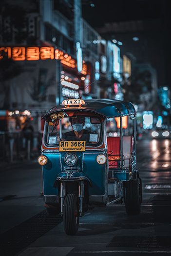
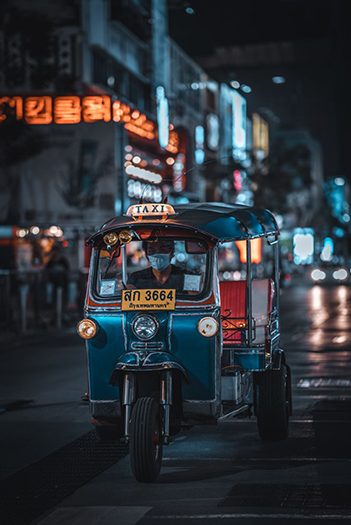

A child walks on a railroad, infamously known as the 'Death Railway' in the town of Kanchanaburi. The Death Railway was built during World War 2 and connected Thailand to Burma.
A train arriving at Chit Lom station, Bangkok. Disembarking passengers typically frequent the luxury shops in nearby Siam Square and Siam Paragon shopping mall.
Sunset in nearby Rayong, a city on the east coast of the Gulf of Thailand. Despite its rural features, Rayong was named an Asia-Pacific City of the Future by the Financial Times in 2017.
A man puts on a fiery performance in Koh Lipe, a small tropical Island paradise with all the usual clichés: white-sand beaches, turquoise waters, and colourful coral reefs.
A man uses an orange umbrella to shield himself from the rain on the the bridge on the River Kwai. The bridge was made famous by the 1957 war film epic - 'The Bridge on the River Kwai'.
A tuk-tuk driver navigates the busy streets of Bangkok in the evening. The humble tuk tuk which can reach speeds of 65kmh, stands as the beating heart of every Thai city.